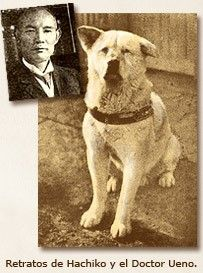
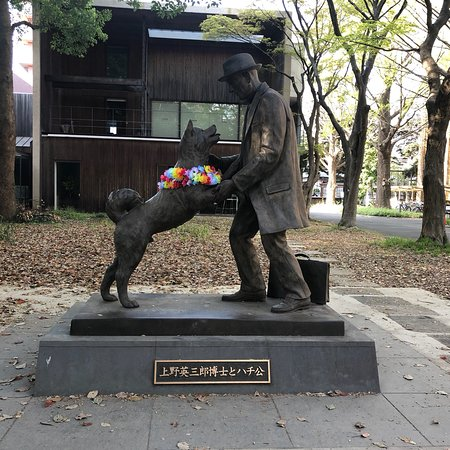

HISTORIA

El Akita Inu es una raza muy antigua, perteneciente a los Spitz, un perro de creación natural y con
descendencia del lobo directa, hace más de 3000 años.
Su nombre proviene de la región Japonesa de Akita y durante sus inicios fue usado como perro para cazar
osos y otros animales grandes y más adelante como perro de pelea.
En el año 1931 fue designado como perro nacional del Japón y se le construyó un monumento nacional.
Durante la Segunda Guerra Mundial su número se redujo de manera drástica pues su pelaje se utilizaba
para confeccionar ropas militares y su carne como alimento. La raza sobrevivió gracias a la protección de algunos ejemplares que fueron trasladados a pueblos
pequeños y criados como perros guardianes.
El Akita Inu es tranquilo y raramente sufrirá por estrés. Al igual que otros perros nórdicos, el Akita es un
perro muy independiente y nada sumiso,
por lo que tiende a ser dominante con otros perros.
Es reservado con las personas a las que no conoce pero muy fiel a su propietario y familia.Es muy leal y
bueno en tareas de vigilancia como perro guardián.
El Akita no es un perro ladrador, así pues, no lo hará sin una razón de peso. Esto es debido a que
fueron originariamente criados para seguir las mismas
técnicas de acecho que los gatos.
Por eso cuando un Akita ladra, hay que prestarle atención.
HACHIKO

A esta raza está muy vinculada la leyenda de Hachiko: un Akita Inu que vivió junto a su dueño en Japón en
la década de los años 30.
Tras la muerte de su propietario, éste Akita siguió acudiendo durante años día tras día a la estación de
tren donde se solían encontrar para ir de camino a casa.
Los trabajadores de la estación, conmocionados por la fidelidad que mostraba el perro, empezaron a
alimentarlo y a cuidar durante el tiempo que pasaba en espera.
Hachiko fue encontrado muerto 10 años más tarde en el lugar de la estación donde solía esperar a su amo
y por ese motivo se decidió esculpir una estatua en su memoria.
ASPECTO
La apariencia de estos akitas tampoco es exactamente igual. Por un lado, el tipo de akita japonés tiene
una constitución musculosa, pero más delgada, con un pliegue bien definido en el área abdominal. La
cabeza es más pequeña, las orejas apuntan más hacia adelante, los ojos son avellanados y la expresión
facial denota el aspecto de zorro típico de los spitzs.
¿SABIAS?

Las principales características de los Akita Inu, tal como demostró el perro Hachiko, son la lealtad, la
y el cariño que manifiestan.
Es también un perro que no sufre estrés, que raramente ladra sin motivo ni ataca en primer lugar a otros
perros. Tiene un gran instinto protector hacia la familia que lo acoge y sus pertenencias.
En Japón antiguamente era símbolo de riqueza y prestigio (porque sólo la nobleza se podía permitir tener
un perro de esta raza) y actualmente se considera un talismán de buena suerte.
Existe la costumbre entre los japoneses de regalar una estatua minúscula de Hachiko cuando nace un bebé
o cuando alguien se enferma, para atraer el buen porvenir.